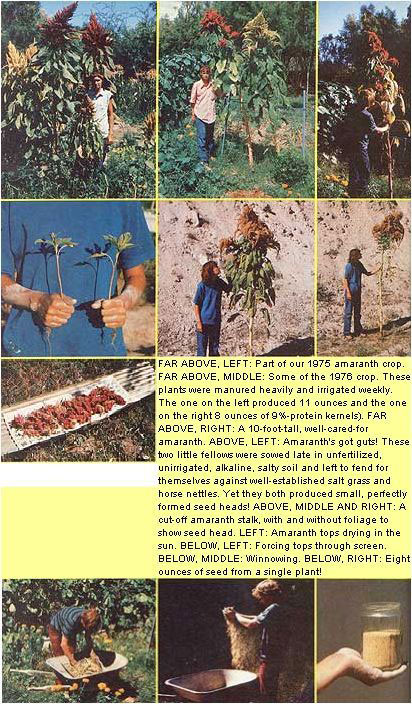

Make protein-rich bread from homegrown amaranth, the "weed" that can yield a cup of grain from a single plant.
One of the most interesting "new" summer cereals that any farmer or gardener has experimented with recently comes from a gigantic Technicolor "weed" called grain amaranth. Although it has been cultivated for centuries by the Indios of Mexico, amaranth remained largely unknown in this country until a few years ago. Yet this fascinating plant (a member of the same family as the tumbleweed and the lovelies-bleeding) produces as high a yield -acre for acre-as a well-favored wheatfield, bears grain with a protein content of 18% (double corn's 9% ), can thrive and produce a crop on soil too dry for corn to even grow on, is so hardy it requires little care, and is seldom bothered by insects.
Our homestead is in southern New Mexico, and I've always considered corn to be my standard summer grain. When Organic Gardening and Farming began to take a strong interest in Amaranthus hypochondriacus a couple of years ago, however, my curiosity was aroused. I've been experimenting with amaranth ever since . . . sometimes with surprising results.
At first I was skeptical about the whole idea: "I'm perfectly satisfied with corn," I thought, "so why do I need amaranth?" But by the time my first crop of the new grain had reached maturity, 1 was already beginning to appreciate a couple of its most important advantages: [1] Amaranth will bear seeds no matter how dry the season (the drier the weather, the smaller the yield, of course) . . . whereas corn must have a certain minimum amount of water before it will produce ears. [2] While corn attracts borers and ear worms like a magnet, amaranth just doesn't seem to interest insects at all. (For these two reasons alone, amaranth may turn into a valuable supplemental grain crop in many parts of the country.)
If my experiences are an indication, you shouldn't have any trouble growing a test patch of this amazing new plant. Be warned, however, that mature amaranth stands six to nine feet tall . . . so sow it on the north end of your garden where it won't shade out smaller crops. And, since the nine-foot giants can be blown down by a strong wind, try to locate them next to a fence that will support their stems.
Sow amaranth seeds in the spring-about corn-planting time-in the kind of soil that weeds like best: rich, moist, and sunny. The seeds are tiny-approximately the size of pinheads-so don't bury them too deep . . 1/8" is about right. Then, since they'll be in the topmost layer of soil-which is quickly dried out by the sun-keep your amaranth plot moist (sprinkle it, or cover it with burlap, or do both) until the seeds have sprouted. (The almost-invisible shoots will peek out in about a week and, at first, you'll only be able to see them if you get down on your hands and knees. Later on, however, the amaranths will develop into miniature "trees" that tower overhead.)
As soon as the young' uns start crowding each other, thin them out to one plant every one or two feet. ( Organic Gardening says the thinnings are edible, but our family finds them too bitter. Our goats, on the other hand, love 'em.) Keep the weeds down (the OTHER weeds) until the amaranths are about 12" tall. After that, the competition won't stand a chance.
If your plants get plenty of water, they should grow a very noticeable inch a day until midsummer. Then they'll put forth large, feathery yellow and purple flower heads . . . and the neighbors will start to ask, "What in tarnation are those things?" (Full-grown amaranths are spectacular enough to serve as excellent backdrops for flower gardens.)
As the weeks go by, the heads of the amaranth plants will start to sag with the weight of their nutritious cargo. They'll be ready to pick in late summer or early fall and here's how to check them for ripeness: Go out on a dry afternoon and rub part of a seed head between your fingers. If some of the pellets fall into your hand, the plants are ready for harvest.
The best time to reap amaranth is early in the morning, when everything is soaked with dew and the wet seeds won't scatter. Wear gloves (to avoid the prickles), and chop off your giants' heads with a machete. If you gather only a few, cut them up and spread 'em out on newspapers to dry in the sun for three or four days. If you have a lot of heads, though, you'll do better to slice and dry them on a long plastic sheet inside a hot attic or shed (that way you won't panic whenever a cumulus cloud moves toward the homestead).
When the pieces of seed head are completely dry, you can thresh them. Because my amaranth operation is still a relatively small one, I handle the job by simply shoving all our dried amaranth heads through a wire-mesh screen (to break them up and knock the seeds loose). If you have a large crop, you may want to throw all the pieces down on a clean floor . . and then dance a jig on 'em, or flail them to bits with a large stick.
Winnowing the seeds from the chaff is always a lot of fun. First I clean all the dirt or manure or whatever out of my trusty old wheelbarrow. Then I load the barrow with buckets of broken-up seed heads and trundle 'em off to "just the right" spot. (Winnowing is best done out in the open in a steady light breeze . . . any stronger wind will blow the tiny seeds away.) When I've found exactly the conditions I want, 1 grab a handful of the pulverized mixture, hold it about shoulder-high, and slowly release it. The lighter chaff is blown away, while the heavier seeds fall down into the wheelbarrow . . . an elegant and totally satisfying process when everything is working right.
(Of course, the wind doesn't always cooperate. In fact, if you ever need to put up aluminum siding, or work on a windmill, or do any other job that would be far easier accomplished in a dead calm, try this: FIRST, start winnowing. Even a freshening breeze will die away -guaranteed!-the instant the first handful of mixture leaves a bucket. THEN you can amble over and put up the siding. That's on the good days. On the bad ones the wind won't quite drop to zero . . . but will keep blowing just enough to sucker you into starting your seed sorting. Then it'll quickly whip around and blow a mouthful of chaff into your face!)
When the wind and I have finally reached enough of a Mexican standoff to actually winnow my grain-and there's nothing left in the wheelbarrow but amaranth seeds-I pour the harvest into jars, store the containers away in a cool and dry place, comb the chaff out of my hair, and get ready for some good eating.
We grind the seeds into flour with our grain mill. The flavor of the cereal is mild enough for you to make whole amaranth bread, if you want, but we usually mix our Amaranthus hypochondriacus flour with an equal amount of wheat flour. The amaranth adds a wholesome "earthy" tang . . and my wife Judy says that the resulting bread tastes like high-class wheat-crackers (without the crunch). However you choose to describe it, I'm sure you'll agree that this easy-to-grow, nourishing, protein-rich, and somewhat unusual grain is good!
Amaranth is still scarce in this country, and the big seed companies probably won't be offering it for a few more years. So, if you want to grow the grain but can't find any seeds anywhere else, send a dollar and a self-addressed, stamped envelope to: Gordon Solberg, Box 23, Radium Springs, N.M. 88054. I'll mail you about 200 of the little buggers.
After that you're on your own . . . 'cause if you can get even one plant to grow, you'll have enough seeds for a lifetime. Which is probably about how long you'll be growing amaranth, too, since this completely awe-inspiring plant yields such a delicious, nutritious crop . . . that, once you try it, you'll never want to be without it!
|
 |
|
|